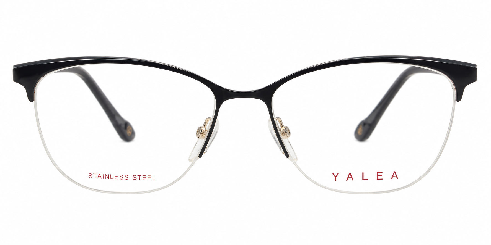

Yalea CHEN VYA001
168 €Ένας θηλυκός σκελετός με σύγχρονη αισθητική και κομψή παρουσία, που δίνει χαρακτήρα στην καθημερινή εμφάνιση χωρίς να γίνεται έντονος. Η σκούρα επάνω γραμμή και οι χρυσαφί λεπτομέρειες δημιουργούν μια διακριτική αντίθεση. Ιδανική επιλογή για όσες θέλουν ένα γυαλί με προσωπικότητα, από το πρωί μέχρι το βράδυ.
Οι φωτογραφίες και η αντιστοίχιση της ετικέτας έχουν επιβεβαιωθεί.